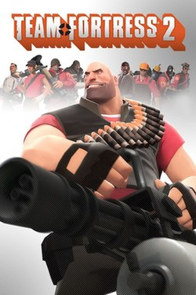

About

Team Fortress 2 was released in 2007, it's a first-person shooter that revolves around the effort of teamwork using a class system. Each class has its own strengths and weaknesses to other classes, but they all serve a purpose to 3 things:
This game also has a few gamemodes like
- Capture The Flag
- Control Points
- Payload
These gamemodes are all typically about territory. Both teams have their own base and can have some classes designated for defending it from the opposing team, while offense classes can push to the opposing team's base.
Most matches can remain equal if both teams strike a good balance of offense and defense. Although support classes can change the balance.
The three support classes include:
- Medic
- Sniper
- Spy
Medic seems self explanatory but they can do more than just heal teammates. They use a mechanic named Ubercharge, which based on which Medigun they use inflicts their teammate with either invulnerability, tripled damage, or quick healing.
These buffs are temporarily though and last a short time. So it creates a situation where a team must strategize and figure out when to utilize an Ubercharge and push with their team to succeed.
You can check out more on the official wikipedia page for the game here
About the Classes
This is a list of classes of the game and what purpose they serve.
Offense Classes:
- Scout: The fastest class, they function as a glass cannon where they have high damage in close-quarters but have low health. Generally the best close-quarter combat class.
- Soldier: This class is a power class as they use a rocket launcher and are one of the most highest health classes there is. This means they are good for holding ground and pushing. They also can rocketjump for mobility.
- Pyro: This class is an ambushing class, using a flamethrower and being one of the best in close-quarter battles. If they surprise attack another class it's likely they'll win from that alone.
Defense Classes:
- Demoman: Similar to Soldier this class uses a grenade launcher and stickybomb launcher as a secondary. This lets them set traps but also have capability of holding ground. Similar health and speed.
- Heavy: This is the iconic class, the Heavy has the highest health out of all the classes. They use a minigun and are slow, which allows them to tank damage and deal damage.
- Engineer: This class has the ability to deploy buildings like the Sentry, Dispenser, and Teleporter. Sentries are automatic turrets that shoot at opposing team members. Dispensers can heal and refill ammo, and Teleporters are self explanatory.
Support Classes:
- Medic: The second fastest class, the Medic can heal teammates with their Medigun beam and even induce Overheal. But their strongest tool is using Ubercharge which can buff teammates for a short time and win team fights.
- Sniper: This class performs best at long range, where the main idea is to headshot and deal high damage. This class requires aim and good positioning. But like Scout, has low health.
- Spy: This class excels in stealth. They can disguise as the other team and temporarily go invisible using a cloak watch. Their main attack is backstabs which instantly kill no matter the health. But like Scout, he has low health and can die easily.